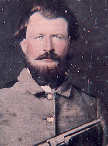

|

NAME: Charles Dock Jenkins
BORN: 1829
DIED: 1915
ALLEGIANCE: Confederate
HIGHEST RANK: Sergeant
UNIT: 29th North Carolina Infantry, Company F
RECORD: Enlisted on August 31, 1861,
Participated in skirmishes throughout eastern Tennessee.
Wounded in the September 19-20, 1863, Battle of Chickamauga.
Also fought in the June 27 Battle of Kennesaw Mountain and
the July 20 Battle of Peachtree Creek in 1864. Surrendered
as part of the Department of Alabama, Mississippi, and East
Louisiana on May 8, 1865.
|
|
North Carolina was a latecomer to the secessionist movement.
Pro-Union feeling was strong in the state, and when the
Confederate States government was organized in Montgomery,
Alabama, in February 1861, the Tar Heel state did not take
part. But when President Abraham Lincoln issued a call for
75,000 Union volunteers in April, North Carolina defiantly
joined the Confederacy.
Later that summer in the mountain country of western North
Carolina, 32-year-old farmer Charles Dock Jenkins chose
sides, joining a military company forming in Jackson County.
Jenkins agonized over leaving his wife and three children
behind. He took some comfort, though, in the fact that his
brother, half-brother, and several other relatives would be
marching alongside him.
Jenkins was mustered into company F of the 29th North
Carolina Infantry on August 31. The regiment marched off to
Asheville for a month of training, then moved on to Raleigh,
where the men received their arms, equipment, and uniforms.
Company F elected Jenkins sergeant, the rank he would hold
for the rest of the war.
Stationed in Tennessee, Jenkins' company began the war
detached from the regiment, on garrison duty. In February
1862 Company F rejoined the 29th at Cumberland Gap, a
strategically important pass in the Appalachian Mountains
near the Kentucky border. The next few months were difficult
for Jenkins. In May he watched helplessly as his cousin,
Mitchell, died of typhoid fever. A month later, Union
Brigadier General George W. Morgan pushed the Confederates
out of Cumberland Gap.
The 29th marched north in October in support of General
Braxton Bragg's invasion of Kentucky. But Bragg was beaten
at Perryville on October 8 and abandoned the offensive
before the regiment saw any action. More garrison duty
followed. At last, the 29th was sent to Mississippi, where
it remained until the fall of Vicksburg on July 4, 1863.
That fall, after two years of skirmishing and marching back
and forth between tedious garrison assignments, Jenkins
finally fought in his first major engagement: the Battle of
Chickamauga, on September 19 and 20. In two days of heavy
fighting, the 9th sustained 110 casualties. Among the
wounded was Jenkins, who suffered a severe leg wound that
left him with a permanent limp.
The injury earned Jenkins a trip home and a warm reunion
with his wife and children. He returned to the front in time
for the 1864 Atlanta Campaign, in which he saw limited
action in the Battles of Kennesaw Mountain and Peachtree
Creek.
When the war finally came to a close, Jenkins was one of the
fortunate men who were left standing. And if surviving was
not enough to cheer him, happy news awaited him at home: his
young family had grown. Nine months after his
post-Chickamauga convalescence, his wife had given birth to
a baby girl.
Source: Civil War Times Illustrated
38:6 (December 1999), 120.
|